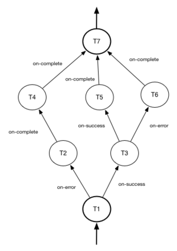
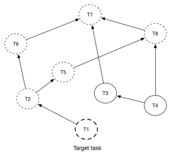

Mistral Workflows¶
Workflow is the main building block of Mistral DSL, the reason why the project exists. Workflow represents a process that can be described in a various number of ways and that can do some job interesting to the end user. Each workflow consists of tasks (at least one) describing what exact steps should be made during workflow execution.
YAML example¶
---
version: '2.0'
create_vm:
description: Simple workflow sample
type: direct
input: # Input parameter declarations
- vm_name
- image_ref
- flavor_ref
output: # Output definition
vm_id: <% $.vm_id %>
tasks:
create_server:
action: nova.servers_create name=<% $.vm_name %> image=<% $.image_ref %> flavor=<% $.flavor_ref %>
publish:
vm_id: <% $.id %>
on-success:
- wait_for_instance
wait_for_instance:
action: nova.servers_find id=<% $.vm_id %> status='ACTIVE'
retry:
delay: 5
count: 15
Workflow types¶
Mistral DSL v2 introduces different workflow types and the structure of each workflow type varies according to its semantics. Currently, Mistral provides two workflow types:
See corresponding sections for details.
Direct workflow¶
Direct workflow consists of tasks combined in a graph where every next task starts after another one depending on produced result. So direct workflow has a notion of transition. Direct workflow is considered to be completed if there aren’t any transitions left that could be used to jump to next tasks.
YAML example¶
---
version: '2.0'
create_vm_and_send_email:
type: direct
input:
- vm_name
- image_id
- flavor_id
output:
result: <% $.vm_id %>
tasks:
create_vm:
action: nova.servers_create name=<% $.vm_name %> image=<% $.image_id %> flavor=<% $.flavor_id %>
publish:
vm_id: <% $.id %>
on-error:
- send_error_email
on-success:
- send_success_email
send_error_email:
action: send_email to='admin@mysite.org' body='Failed to create a VM'
on-complete:
- fail
send_success_email:
action: send_email to='admin@mysite.org' body='Vm is successfully created and its id is <% $.vm_id %>'
Reverse workflow¶
In reverse workflow all relationships in workflow task graph are dependencies. In order to run this type of workflow we need to specify a task that needs to be completed, it can be conventionally called ‘target task’. When Mistral Engine starts a workflow it recursively identifies all the dependencies that need to be completed first.
The figure explains how reverse workflow works. In the example, task T1 is chosen a target task. So when the workflow starts Mistral will run only tasks T7, T8, T5, T6, T2 and T1 in the specified order (starting from tasks that have no dependencies). Tasks T3 and T4 won’t be a part of this workflow because there’s no route in the directed graph from T1 to T3 or T4.
YAML example¶
---
version: '2.0'
create_vm_and_send_email:
type: reverse
input:
- vm_name
- image_id
- flavor_id
output:
result: <% $.vm_id %>
tasks:
create_vm:
action: nova.servers_create name=<% $.vm_name %> image=<% $.image_id %> flavor=<% $.flavor_id %>
publish:
vm_id: <% $.id %>
search_for_ip:
action: nova.floating_ips_findall instance_id=null
publish:
vm_ip: <% $[0].ip %>
associate_ip:
action: nova.servers_add_floating_ip server=<% $.vm_id %> address=<% $.vm_ip %>
requires: [search_for_ip]
send_email:
action: send_email to='admin@mysite.org' body='Vm is created and id <% $.vm_id %> and ip address <% $.vm_ip %>'
requires: [create_vm, associate_ip]
For more details about DSL itself, please see Mistral DSL specification